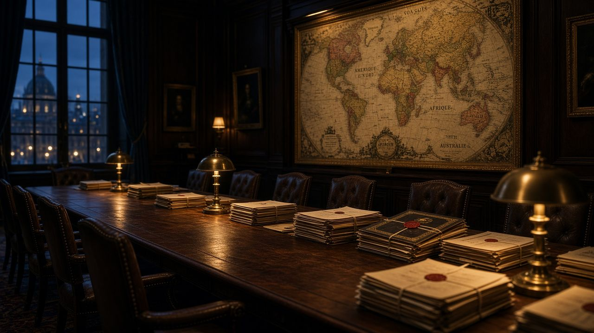

Восемь досье · Foreign Affairs, Die Zeit, TASS, Indian Express, SCMP и другие

Восемь досье · Foreign Affairs, Die Zeit, TASS, Indian Express, SCMP и другие
Главная · СМИ
Реакция и обсуждение международных изданий тех же событий, что собраны в основном архиве: лекция Миршаймера, признание Меркель о Минске, срыв Стамбула, экономика Вашингтона, голос Азии и БРИКС. У каждой новости — отдельная страница с кратким и полным конспектом.
Это не «наша редакция». Это досье прессы: заголовки, рамки и цитаты Foreign Affairs, Die Zeit, TASS, Marianne, Courrier International, Ukrainska Pravda, Berliner Zeitung, The Hill, China Daily, NZZ, Indian Express, Hindustan Times, Mint, SCMP, Reuters и POLITICO. Видео не встроены.
СМИ · Блок II · 2014–2023
Как Foreign Affairs, Die Zeit, TASS, Ukrainska Pravda и Berliner Zeitung разобрали лекцию Миршаймера, признание Меркель о Минске и стамбульский срыв.


|
СМИ 01 / 08 · август 2014 — сентябрь 2015 · Статья и академический разбор в СМИ Foreign Affairs: «Why the Ukraine Crisis Is the West’s Fault»Ещё до лекции 2015 года главный журнал американского истеблишмента напечатал тезис Миршаймера: корневая причина кризиса — расширение НАТО, а не «реваншизм» Москвы. Западная пресса годами спорила с этой статьёй; после 2022-го её цитируют и сторонники, и критики как документ, предсказавший войну. |


|
СМИ 02 / 08 · 7–14 декабря 2022 · Волна публикаций после интервью Как мировые СМИ прочитали признание Меркель о МинскеПосле интервью экс-канцлера Die Zeit европейская, российская и французская пресса разошлись в оценках одной фразы: Минск «дал Украине время». TASS пишет о «заявке на трибунал», Marianne — о камне в политическое болото, Courrier International собирает «вид из Москвы». |


|
СМИ 03 / 08 · 24–28 ноября 2023 · Телеинтервью и международный разбор Стамбул-2022: как пресса разобрала откровения АрахамииГлава украинской делегации на «1+1» подтвердил: Россия была готова остановить войну в обмен на нейтралитет и отказ от НАТО, а Борис Джонсон по возвращении из Стамбула сказал «просто воевать». Ukrainska Pravda, Berliner Zeitung, Meduza и Antiwar.com разложили интервью на цитаты — с разными выводами о том, кто сорвал мир. |
СМИ · Блок III · 2024
Как интервью Сакса и разбор Гринвальда разошлись по The Hill, подкастам и дискуссии о неоконсерваторах и оборонных контрактах.


|
СМИ 04 / 08 · 28–29 мая 2024 · Интервью и телеразбор Джеффри Сакс у Карлсона: как The Hill и сетевые СМИ разобрали неоконовДвухчасовое интервью экономиста и экс-советника ООН Такеру Карлсону (28 мая 2024) The Hill вынес в утренний эфир Rising уже на следующий день. Сакс связывает расширение НАТО, санкции, удар по европейской промышленности и ускорение БРИКС в одну макроэкономическую цепь — и американские студии спорят, «умнейшая оценка войны» это или изоляционизм. |

|
СМИ 05 / 08 · 2024 · Подкаст / видеоразбор в медиасреде Гринвальд и Карлсон: ВПК, цензура и запрос на вечную войнуЛауреат Пулитцера разбирает, как военно-промышленный комплекс, спецслужбы и крупные платформы США создают спрос на затяжные конфликты. Пресса и клипы 2024 года выносят из выпуска схему: оборонные контракты → информационная мобилизация → табу на дипломатию. |
СМИ · Блок IV · 2022–2024
China Daily, NZZ, Indian Express, Hindustan Times, SCMP, Reuters и POLITICO о позиции 85% мира, речи Джайшанкара и Мюнхене Ван И.


|
СМИ 06 / 08 · 2023–2025 · Колонки и интервью «85% мира»: как пресса разнесла тезис МахбубаниСингапурский дипломат повторяет цифру, которую подхватили China Daily, австралийский John Menadue, швейцарская NZZ и Foreign Policy: санкции против РФ не поддержали страны, где живёт около 85% человечества. Для азиатской прессы это не оправдание вторжения, а приговор западной монополии на моральный рассказ о войне. |


|
СМИ 07 / 08 · 3–5 июня 2022 · Речь на форуме и индийская пресса Джайшанкар на GLOBSEC: индийские газеты против евроцентризмаThe Indian Express, Hindustan Times и Mint вынесли в заголовки фразу министра иностранных дел Индии на GLOBSEC в Братиславе: Европа должна перерасти мысль, будто её проблемы — проблемы всего мира. Это манифест независимой политики Дели — и ключ к тому, почему Нью-Дели не присоединился к санкциям. |


|
СМИ 08 / 08 · 17–18 февраля 2024 · Речь и международная хроника Ван И в Мюнхене-2024: Китай в западной и китайской прессеНа 60-й Мюнхенской конференции глава МИД КНР назвал Китай «силой стабильности». Xinhua подчёркивает Global Security Initiative и неделимость безопасности, SCMP — защиту связей с Москвой и «красную линию» по Тайваню, Reuters — разговор с Кулебой о мире, POLITICO — отказ вырезать Китай из мировой экономики. |
Весь сайт — HTML, CSS и картинки. Скачать ZIP. Памятка для выкладки на GitHub Pages и uCoz — здесь.
Красные линии — статический HTML-архив. Без скриптов, без серверной части, без внешних шрифтов. Открывается с диска, на GitHub Pages и на uCoz. Кодировка UTF-8. Видео на сайт не загружались — только ссылки на первоисточники.
Материалы собраны как конспекты публичных выступлений, интервью и публикаций СМИ. Цитаты даны по общедоступным расшифровкам; полнота — у первоисточника.
Оглавление · СМИ · Скачать ZIP · Как выложить